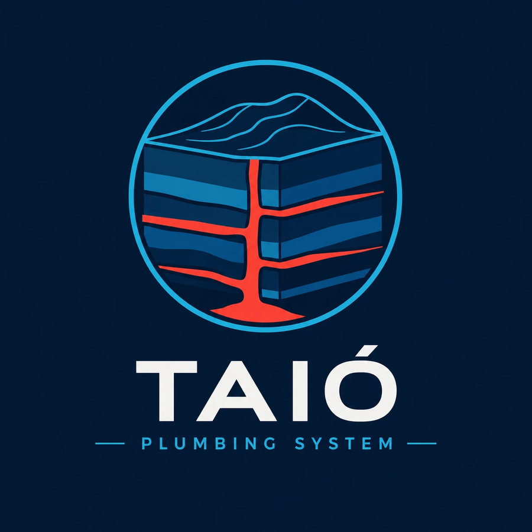

Modelagem 3D e seção transversal interativa do sistema intrusivo (sill/dique) de Taió — Mestrado em Geologia, UFSC.
Mapa em tela cheia com zoom/pan contínuo (Leaflet): pontos de campo, mapa geológico atualizado, sill/dique, dados estruturais e camadas de referência (rios/estradas/localidades).
GitHub ↗Cubão 3D com topografia real, corpos intrusivos, formações sedimentares e ferramenta de corte com 4 direções. Modos de cor: hipsometria, mapa geológico e satélite.
GitHub ↗Vermelho reservado para intrusões e condutos magmáticos; azuis para as unidades sedimentares e a interface. Tipografia: Montserrat (títulos), Inter (texto) e IBM Plex Mono (dados).